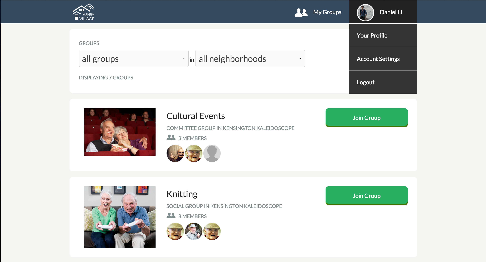
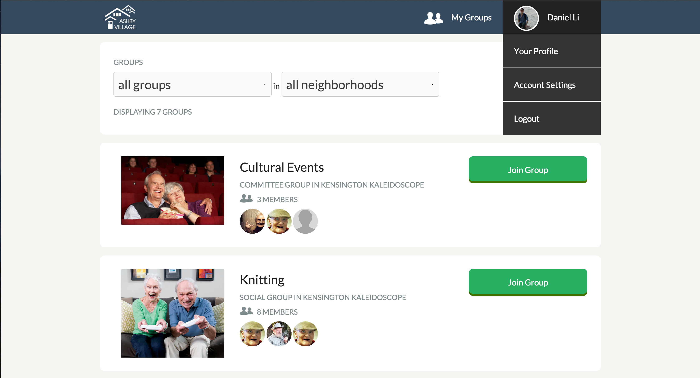

Ashby Village is a nonprofit that connects members with each other and with the resources they need to remain active and independent. Ashby Village needed a tool to increase village communication and event generation. I led a team of designers and developers to conceptualize and build Ashby Village Square.
 


With Ashby Village Square, we set out to build an application that is both easy and fun for villagers to use. We first conducted several user interviews to understand core problems that the villagers were facing. The user interface was tailored to an older audience, and the flow was tailored to fit the existing village hierarchy and organizational structure.
Ashby Village Square was built with Ruby on Rails. Feel free to ask me about design decisions, architectural decisions, and feature development!